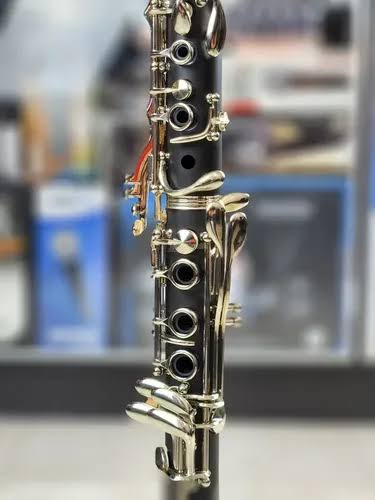

Na imagem ilustrada, o instrumento representado é o clarinete. Um clássico presente em diversas obras tem sua história iniciada aproximadamente em 1690 e 1700, quando um contrutuor alemão, chamado Johann Christoph Denner em Nuemberg. Sua história começa, quando o alemão tenta modificar um instrumento barroco chamado Chalumeau, onde ele muda totalmente a estrutura, como a fabricação de uma nova campana, modificação no bocal do instrumento e adicionou à ele novas chaves, metálicas, que o permitiu atingir notas muito mais agudas, e assim o instrumento se tornou famoso entre osquestras e músicas clássicas.